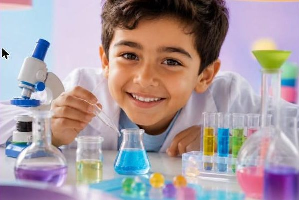
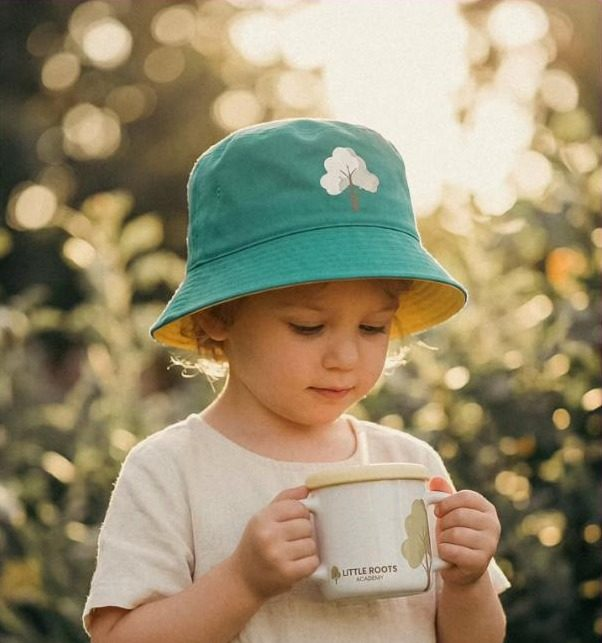
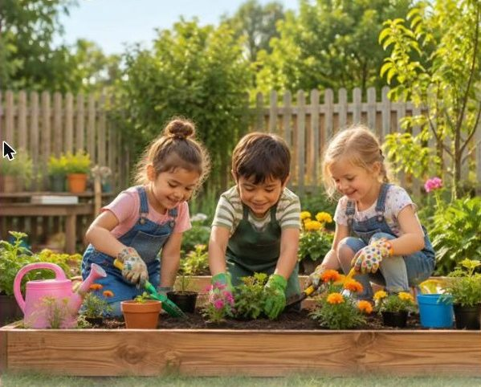
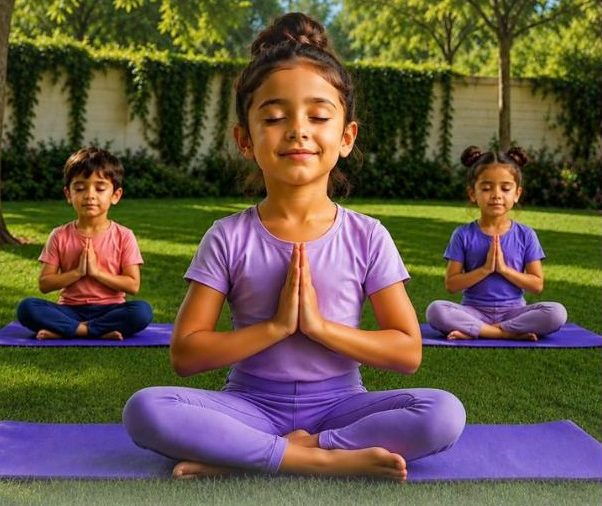
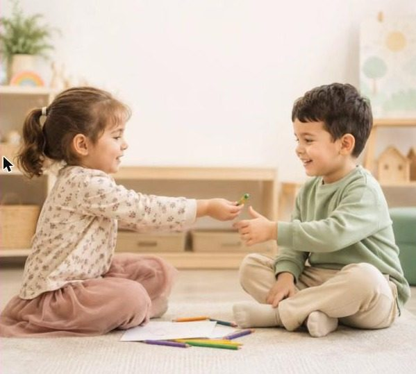
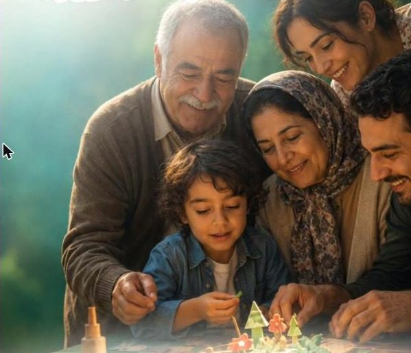
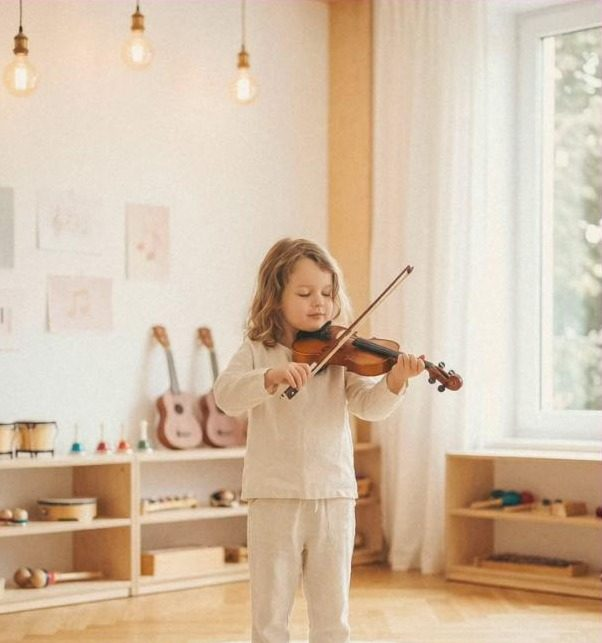
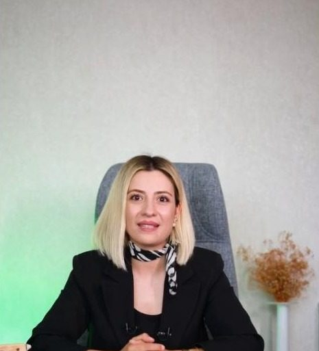
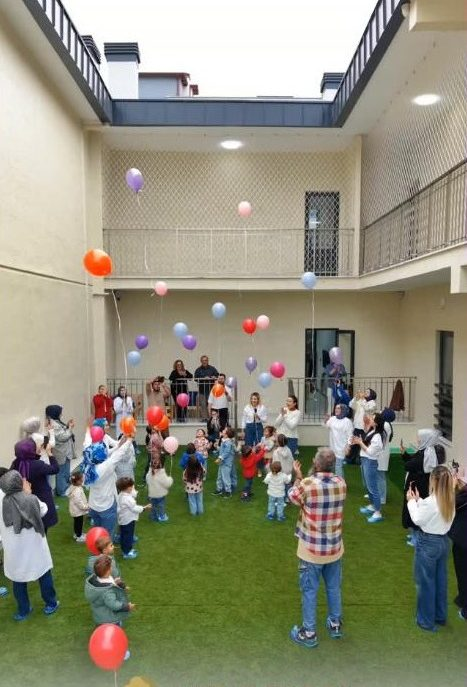
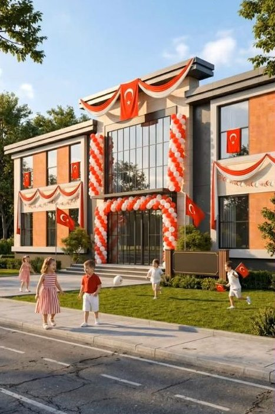

Oynayarak İngilizce
Puppet Talk & Drama, English Lab & Discovery, Show and Tell.
Meram'da 2–6 yaş çocuklar için oyunla, doğayla ve keşfederek öğrenen bir anaokulu. Her çocuk kendi hızında büyür, biz de köklerinin sağlam olmasına eşlik ederiz.

Bir ağaç gücünü göremediğimiz köklerinden alır. Bank Street yaklaşımıyla çocuğu merkeze koyan dört kökümüz var.
Her çocuk kendi hızında büyür ve keşfeder.
Toprağa dokunur, merak eder, deneyerek öğrenir.
Sosyal beceri, öz güven ve problem çözme bir arada.
Aile atölyeleri ve rehberlikle aynı yolda.
Tohumdan ağaca, her yaşın kendi sınıfı ve kendi programı var. Çizgiler o yaştaki çocukların ortalama boyunu gösteriyor.
Uyum, duyusal oyun, ilk arkadaşlıklar.
Dil gelişimi, paylaşmak, hayal oyunları.
Merak soruları, drama, ilk İngilizce kelimeler.
Okula hazırlık, problem çözme, sorumluluk.
Sınıf isimleri öneridir. Boylar Dünya Sağlık Örgütü büyüme eğrilerinden yaklaşık ortanca değerlerdir; cetvel 70 cm'den başlar.

Puppet Talk & Drama, English Lab & Discovery, Show and Tell.

Doğanın İçinde Drama, Imagine & Act, meslek canlandırma.

Mini tenis, zumba ve dans, yoga, yüzme ve daha fazlası.

Paylaşmak, teşekkür etmek, saygı göstermek.

Ailelerin katıldığı üretim ve yaratıcılık atölyeleri.

Ritim, resim, el işi; kendini ifade etmenin yolları.

“Her çocuğun kalbine sevgiyle dokunuyor, hayallerine umutla eşlik ediyoruz.”
Bu alana müdür mesajı gelecek. Okulun neden kurulduğu, çocuklara ve ailelere verdiği söz burada iki üç cümleyle anlatılacak.
Bizi “Little Roots Academy” adıyla tanıyorsanız doğru yerdesiniz: aynı okul, aynı ekip, yeni isim.

avlumuzda bir gün
okulumuzOrtak alanlar 7/24 kamerayla izlenir, giriş ve çıkışlar danışmada kontrol edilir.
Yaş grubuna uygun, dengeli ve besleyici günlük öğünler.
Gelişim yakından izlenir, gerektiğinde aileyle birlikte destek çalışması yapılır.
2–6 yaş arası çocuklara, yaşa ve gelişime uygun programlarla hizmet veriyoruz.
Bank Street modeli: çocuk merkezli, araştırarak ve keşfederek öğrenme.
Hayır. Sosyal beceri, öz güven, problem çözme ve günlük yaşam becerileri de programın parçası.
Yaş grubuna uygun, dengeli, sağlıklı ve besleyici öğünlerle.
Ortak alanlarda 7/24 kamera var, giriş ve çıkışlar danışmada kontrol ediliyor.